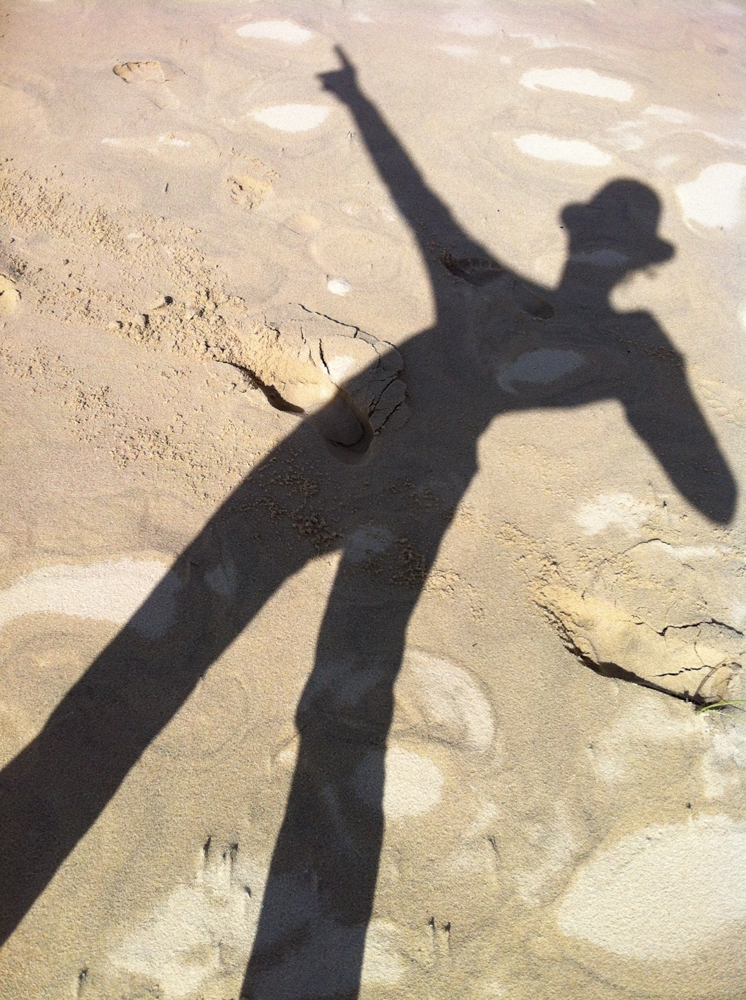

À propos
Artiste peintre et cinéaste, passionnée par les textures, la lumière et la couleur. La démarche explore les liens entre geste, matière et paysages intérieurs, que ce soit à travers la peinture ou le cinéma.
Chaque œuvre est une invitation à ressentir au-delà du visible, à travers les matières, les reliefs et les contrastes qui composent un univers singulier et profondément personnel.
Expositions récentes : 2024 — Galerie Lumière · 2023 — Espace 19 · 2022 — Salon d'Art Contemporain
Tendance du moment
En ce moment, le travail s'oriente vers le relief, la superposition de matières et l'empreinte du geste. Les peintures explorent des textures denses, où la lumière s'accroche aux aspérités pour révéler de nouveaux chemins visuels.
Cette recherche se traduit par des glacis, des ajouts de médiums et parfois des éléments incorporés, afin d'obtenir une profondeur vivante et tactile.
La panthère
Les moustaches de la panthère sont réalisées en relief à l'aide de petits fils durs, créant une texture tactile unique qui donne vie au portrait.
Technique Acrylique et fils durs · Dimensions 90×60 cm

Envie d'en savoir plus ?
Pour une exposition, une acquisition ou un échange autour de l'art.